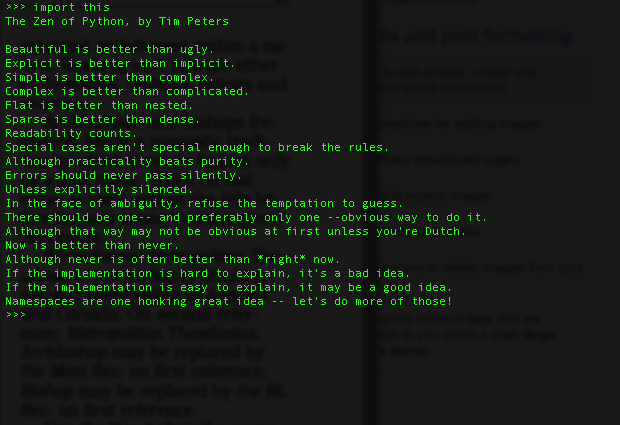
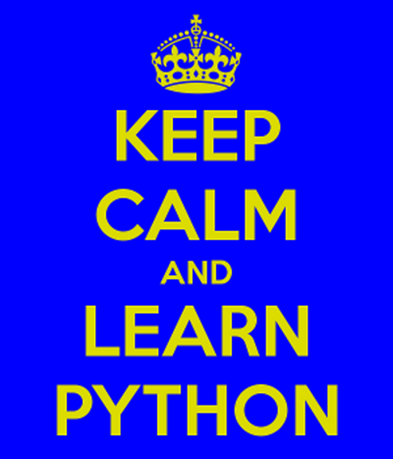

Grupython UFLA
2013/1
Cássio Botaro "Skin"
28 de Maio de 2013
Quem sou eu?
- Quarto periodo Ciência da computação na UFLA
- Fundador e coordenador do Grupython UFLA
- Técnico em Automação Industrial
- Coordenador da Python-MG
- Usuário Linux e Amante do open source.

Bem vindos!
Sabe Programar?

Um pouco de história...

- Criada por Guido van Rossum
- Surgiu em 1990
- Baseado em Algol 68, C, Modula-3, ABC e outras.
- Nome baseado na série Monty Python's Flying Circus
- BDFL trabalha para Dropbox
- Licença compatível com software livre
- Ainda em produção
Por que python?


Python me ajuda a focar nos meus conceitos em vez de brigar com a linguagem.
Bruce Eckel - autor do Thinking in C++ e Thinking in Java
Por que python?
- Produtividade em menor tempo
- Estruturas de dados de alto nível
- Tipagem dinâmica(mas forte)
- Blocos de código através da identação, o que propicia um código mais limpo e organizado
- Você não tem que preocupar com ponto e vírgula ao fim dos comandos
- Melhora da auto estima do programador
- Código legível para humanos
- Escreve pouco e produz muito
- Comunica com várias linguagens
- E muito mais...
...
A vida é melhor sem chaves.
Bruce Eckel - autor do Thinking in C++ e Thinking in Java
Python tem sido uma parte importante do Google desde o início, e pernanece assim conforme o sistema cresce e evolui. Hoje dezenas de engenheiros do Google utilizam Python, e estamos procurando por mais pessoas com conhecimento nesta linguagem.
Peter Norvig - Diretor de Qualidade de busca do Google Inc.
Python é entre todas as linguagens que eu aprendi a que menos interfere entre mim e o problema, é a mais efetiva para traduzir pensamento em ações.
Eric Raymond - Hacker
[...]Nossa filosofia aqui é "Python sempre que pudermos, C++ se necessário."
Alex Martelli - Google
Comunidade

Python Brasil 5
Zen do Python

Um pouco mais sobre a linguagem:
- Multiplataforma
- Multiparadigma
- Multiuso(Baterias Incluidas)

Onde é utilizada?
- Robótica
- Games
- Aplicações web
- Computação científica
- Interfaces gráficas
- "glue language"
- Coloque aqui sua área
Não pergunte o que pode fazer com python e sim o que python pode fazer por você.
Quem usa?
- NASA
- Industrial light & Magic
- Globo.com
- Dropbox
- Sites do governo brasileiro
- Outras...
Por onde começo ?!?!
Qual IDE utilizar?
Hello World!
print("Hello World")
import __hello__
import antigravity
import webbrowser
webbrowser.open("http://xkcd.com/353/")
Podemos testar código enquanto programamos!
REPL (Read, Eval, Print, Loop)
Python 2 ou 3 ?!?!
Tudo é Objeto!
Por Favor e Obrigado
dir e help
Python é lento!!!
Apenas um arranhão!
Otimização prematura é a raiz de todo o mal.
Tony Hoare

Python é rápido suficiente para o nosso site e nos permite produzir características de fácil manutenção em tempos recordes, com um mínimo de desenvolvedores.
Cuong Do, Arquiteto de software, Youtube.com

"Talk is cheap, show me the code!"

Dúvidas ?!?!?
Obrigado!!